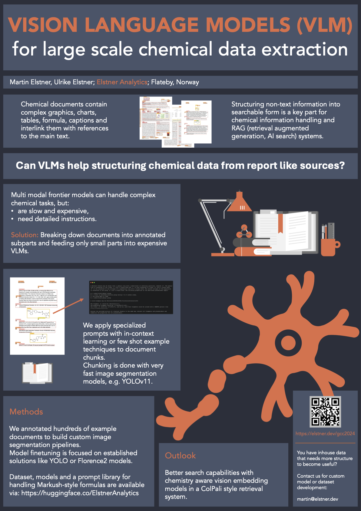

German conference on cheminformatics 2024 (GCC2024)
We will show some recent results on Poster 20 in the exhibition:

If you are interested in model creation for (Visual) Language Models in chemistry, data extraction with machine learning from reports or unstructured sources, want to get on speed with your dataset creation:
Book a call.Document annotation dataset
The dataset consists of around 1000 CC-BY-4.0 licensed open access paper pages and the annotations on-top are provided under the same license. Train, test and validation splits are provided as separate folders containing the image files and a single json file containing the annotations in COCO format.
The classes are close to the TFT-ID dataset and extend into 3 chemistry specific labels. chem_reaction contains everything with reaction arrows, chem_structures are structural formulas without reactions and chem_table is used for tables containing structural formula.
The dataset is also available on Roboflow, allowing to directly convert the annotations into different formats. On the online platform, you can also easily inspect visually the annotations, adjust bounding boxes or remove classes.
Potential issues are some overlaps of bounding boxes (in case of close up tables and figures), so if you want to train a custom model, check before, if this would be an issue and filter the images out or remove one class of labels. In our experiments, for YOLOv10 and YOLOv11 models, we don’t see negative impact from including them.
Prompts to handle Markush formula
Some visual language models (VLMs) didn’t allow to submit multiple images in a single turn, making single/few shot prompting with visual examples impossible. It’s not practical to show visual examples and ask for an analysis on a different image. As this is a very general issue, we assume that it will be addressed by model providers soon. Nevertheless, also from a cost perspective it is advisable to default to pure text prompts. The following is our attempt on a textual description on Markush formula and a usable fragment pattern in a SMILES/SMARTS notation:
A Markush formula may be drawn like: a phenyl ring with a substituent at arbitrary positions, labeled ‚R‘. The phenyl ring is connected to the linker ‚Y‘ with a single bond and ‚Y‘ is also connected to linker ‚W‘ with a single bond. ‚W‘ is the connected to one nitrogen of a piperazine ring with a single bond. The second nitrogen of the piperazine is connected to the group ‚A‘ with a single bond. The following properties of the mentioned placeholders apply:
A: a substituted phenyl group,
W: a linear or branched alkaline group having 2 to 6 carbon atoms,
Y: the group NHCO or CONH
R: a substituted phenyl group
A valid example may be COc1ccccc1N4CCN(CCCNC(=O)c2ccccc2c3ccccc3)CC4
The fragment ‚A‘ would be: COc1ccccc1[1*],
the piperazine fragment would be: [1*]N1CCN([2*])CC1 ,
the linker ‚W‘ would be: [2*]CCC[3*], and so on, such that fragments could be joined with a SMARTS pattern like [*:1].[*:1]>>[*:1]-[*:1].
Analyse the provided picture of a Markush formula in the same way, extract all fragments and placeholders and summarise the properties for all placeholders.This prompt can serve as a starting point for in context learning experiments for VLMs like GPT4o or Claude Opus. Add more examples to make it a few shot prompt or modify the fragmentation format, according to your needs. It works very well with Claude Opus 3.5 and at a slightly reduced accuracy with Qwen2-VL-7B-instruct. If you need a very specific class of molecules, try to adjust the example backbone and functional groups accordingly.
It’s also possible to extend the example for synthetic data generation (letting the model come up with potential and plausible Markush notations):
Based on the description of a Markush formula, come up with 100 plausible Markush formulas that would describe small molecule, drug like substances.Integration into a pdf handling pipeline
Running a complete pipeline locally (24 core, 64GB RAM, L40 GPU) with a YOLOv11 image segmentation, no OCR on text fragments/paragraphs and Qwen2-VL-7B-instruct allows to handle 5.5 pages per second (heavily depends on the image density, average over academic papers, for patents, throughput will be higher).
Running a similar setup with serverless components on AWS will cost about 2 cents per page. If you run a single instance of the YOLOv11 model on sagemaker, around 6 pages per second can be annotated. For more throughput, parallelization from this setup is easily achieved.